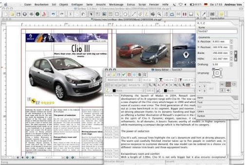

也紀念我們永遠的朋友 李士傑先生（Shih-Chieh Ilya Li）。
淺談將開放源碼軟體改名並違法販售：Butterfly Media on Amazon
藉由開放源碼軟體營利原本是一件好事，但若事涉違法取用或是踏入了惡意隱藏的灰色地帶，那麼就有很多可議空間。
一家 Butterfly Media 公司已在英國 Amazon 上販售許多開放源碼應用程式，而且除了違反著作權法外，還刻意更改開放源碼應用程式的名稱後再販售（註一）。例如，其中的 Dangers of the Deep，是一款時代背景為第二次世界大戰的遊戲。在 Amazon 上被改為 "U-Boat Simulator" 販賣，但 Dangers of the Deep 部分的授權屬於「創用 CC (Creative Commons)-姓名標示-非商業性-禁止改作 2.0」，意即該遊戲不可商業性使用或營利。該公司此舉明顯違反了著作權法。
其它的還有 FlightGear 被改名為 "Flight Simulator 2010"，Scribus 被改名為 "Desktop Publishing Studio"，以及 InkScape 被改名為 "Photo Studio"。
甚至在 Amazon 產品介紹頁上，Butterfly Media 還刻意變造 Scribus 官方網站上的截圖，把截圖中的應用程式名稱（Scribus 字樣）抹除掉（注意以下二圖左上角的差別）。
▲ 圖1 圖片原始來源：https://scribus.sourceforge.net/gallery/，其著作權利屬於 Scribus Team 所有，本文依其使用聲明僅透過外部連結的方式顯示圖片，並未下載圖片之後再行重製散布。

▲ 圖2 Butteryfly Media 在 Amazon 的販售頁面，圖片原始來源：https://www.amazon.co.uk/gp/product/B0040RQ7BU 。
另外的 InkScape 在 Amazon 產品介紹頁上，也故意將該程式的執行畫面 "InkScape" 抹除。
▲ 圖3 Butterfly Media 公司在英國 Amazon 上的產品功能介紹圖，圖片原始來源：https://www.amazon.co.uk/gp/product/B0041313S0 。
開放源碼軟體的販售
就開放源碼軟體的授權規則來說，並不禁止直接將其衍生產品進行商業營利，但若是刻意將應用程式的名稱抹除，道德層次與法律層次上都是可以被嚴重譴責的（註二）。
另外，在道德或商譽上，對於購買的使用者來說，如果是在事後才得知該應用程式原來可以從網路上免費下載，而且功能還一模一樣時，不知道內心的感受會是什麼，尤其 FlightGear 這款遊戲在 Amazon 上被該公司以美金 25 元販售。
不過這家公司偷也偷過頭了，他把 Orbiter 也放在上面販售，但 Orbiter 並不是開放源碼軟體。Orbiter 在其官方網站上已說明「禁止商業使用」。
結論
開放源碼軟體是可以合法進行營利，但是君子愛財取之有道。在這個案例中，Butterfly Media 不僅在道德及商譽上受損，也侵犯了相關著作權利人的合法權利，只要任一著作權利人依法定程序提出賠償要求，是可以合理得到應該有的侵權賠償金的。
註一：Open-Source Projects Are Getting Ripped On Amazon，https://www.phoronix.com/scan.php?page=news_item&px=OTAyNg 。
註二：實際相關的司法判決，可參照下列文章與譯文內容：
1. 黃雪雁，美國上訴法院肯定自由／開放源碼的授權模式，https://www.openfoundry.org/tw/legal-column-list/1836-2010-07-15-10-24-44 。
2. 林誠夏，保護密度的高與低：侵權與違約差異之我見，https://www.openfoundry.org/tw/legal-column-list/1628-2010-07-15-11-16-38 。
3. 謝良奇編譯，美國法院判決開放源碼授權享有著作權法保障，https://www.openfoundry.org/tw/worldwide-news/1715 。
自由軟體鑄造場電子報 : 第 170 期 不做 NoSQL 的 CouchDB
標籤: 曾義峰, Scribus, InkScape, flightGear, Dnagers of the Deep, ant, Orbiter, Butterfly Media,
分類: 企業應用
專欄總覽


E-Mail：contact@openfoundry.org Address：台北市南港區研究院路2段128號 中央研究院資訊科學研究所 . 隱私權條款. 使用條款